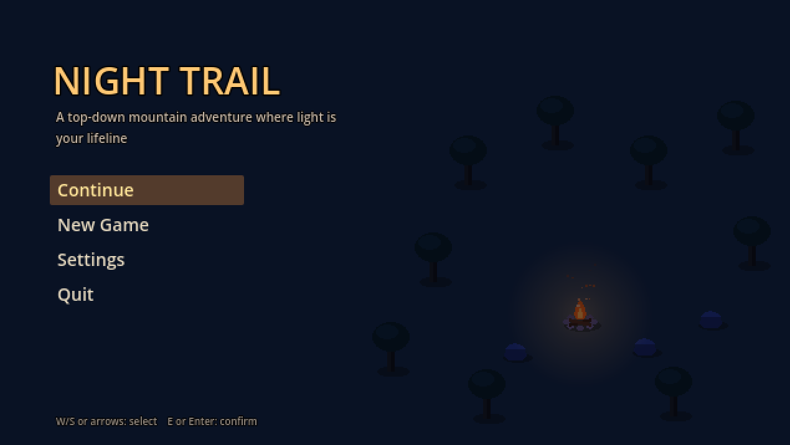

Game development blog
Night Trail
A top-down mountain adventure where light is your lifeline


A lone hiker sets out on a multi-day trek to a high mountain pass. Days are warm and cozy: you explore autumn trails, gather supplies and meet other hikers at campsites.
When the sun sets, the world goes dark, and the only safety is the light you carry. Night Trail is my final-year project at Kingston University, made in Godot 4. On this blog I write about how it is going, sprint by sprint.
Latest post

Sprint 3 – Campsites, saving and menus
A solid campfire, firewood that grows back, apples, resting, saving, and real menus. Night Trail starts to feel like a game.
Read the post →